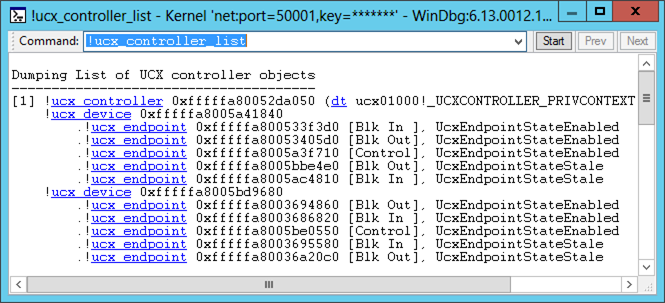

The !usb3kd.ucx_controller_list command displays information about all USB 3.0 host controllers on the computer. The display is based on data structures maintained by the USB host controller extension driver (UcxVersion.sys).
!usb3kd.ucx_controller_list
Examples
The following screen shot show the output of the !ucx_controller_list command.

The output shows that there is one USB 3.0 host controller, which is represented by the line that begins with !ucx_controller. You can see that two devices are connected to the controller and that each device has four endpoints.
The output uses Using Debugger Markup Language (DML) to provide links. The links execute commands that give detailed information about individual devices or endpoints. For example, you could get detailed information about an endpoint by clicking one of the !ucx_endpoint links. As an alternative to clicking a link, you can enter a command. For example, to see information about the first endpoint of the second device, you could enter the command !ucx_endpoint 0xfffffa8003694860.
DLL
Usb3kd.dll
Remarks
The !ucx_controller_list command is the parent command for this set of commands.
The USB host controller extension driver (UcxVersion.sys) provides a layer of abstraction between the USB 3.0 hub driver and the USB 3.0 host controller driver. The extension driver has its own representation of host controllers, devices, and endpoints. The outputs of the commands in the !ucx_controller_list family are based on the data structures maintained by the extension driver. For more information about the USB host controller extension driver and the USB 3.0 host controller driver, see USB Driver Stack Architecture. For an explanation of the data structures used by the drivers in the USB 3.0 stack, see Part 2 of the USB Debugging Innovations in Windows 8 video.
See also